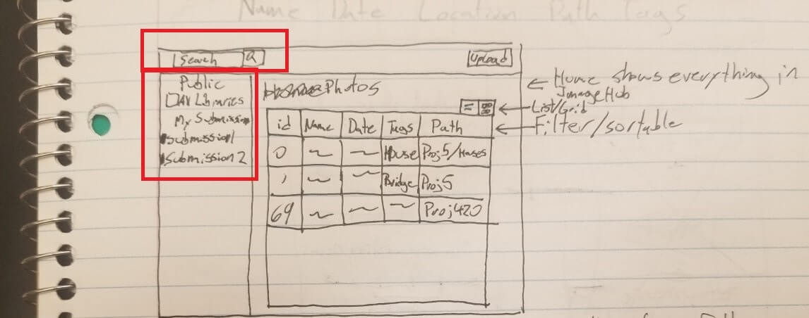

In an attempt to solve our first problem we took inspiration from Google Drive. We believed using a directory browser and smart search feature in parallel would allow users to easily find desired photos and projects despite the immense number of uploads. Initial mock-ups involved an additional layer of filter by displaying viewed content in a table.

To accomodate the marketing user needs, we provided uploaders the ability to mark images as "marketing ready" when they beleived the photo was high quality. This would allow marketing users to filter searches to only high quality photos. We also decided to swap our initial table view designs for a grid of large thumbnails.
This would allow marketing users to get a better preview of the images instead of having to open each table item individually.
Due to the large number of uploads, we decided to abstract the system into two major components. The initial uploads would be added to one of the user’s workbenches in which they could make any desired changes before publishing to the public portion of the system. This allowed for a process flow in which users could keep track of their work bench progress and return to it over multiple sessions.